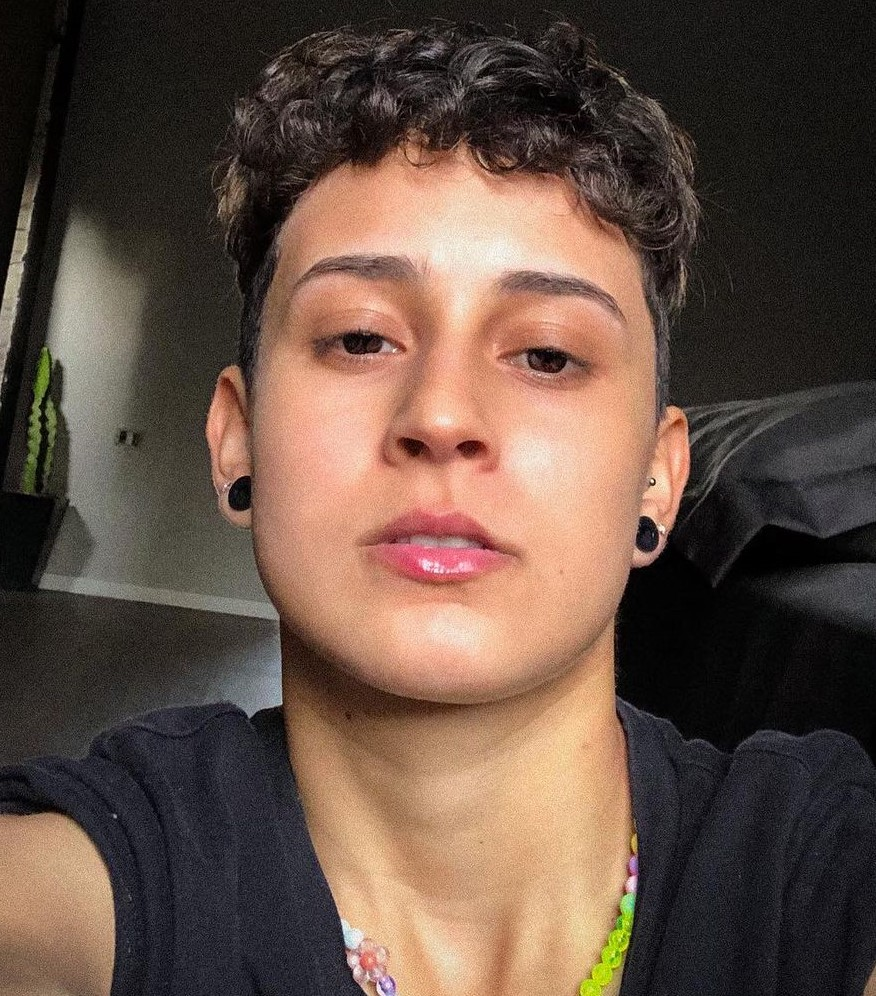

Keron Ferreira
Desenvolvedor Frontend Júnior


Sobre
Oi! meu nome é Keron Ferreira, seja bem-vindo(a)!
Sou apaixonada por tudo que envolve Tecnologia desde criança. Sempre tive vontade de trabalhar com programação e atualmente comecei colocar isso em prática estudando HTML, CSS, JavaScript e Dart. Esse está sendo o meu primeiro projeto HTML, e estou feliz por estar conseguindo desenvolvê-lo aos poucos. Gosto muito de coca cola, e meus principais hobbies são: jogar MMO, RPG, ver filmes, séries e também gosto de ouvir músicas e as vezes ler.